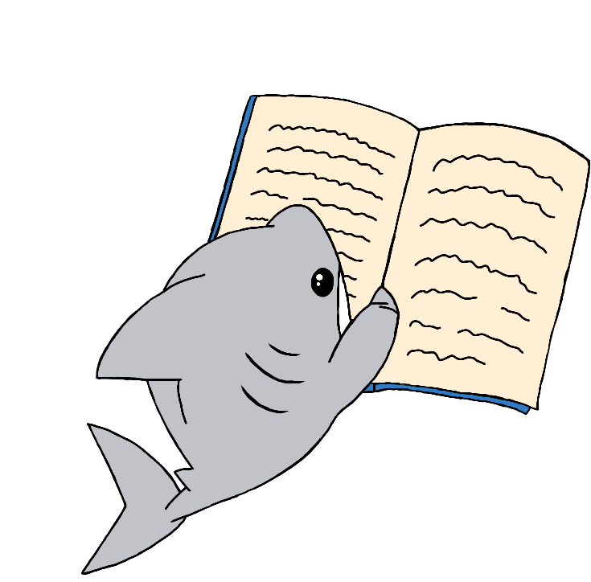

Olá, meu nome é Alexandra, a criadora do Dynamic Readers :)

Por muito tempo eu acreditei que lia bem e
rápido na medida certa, até ter que lidar
com livros mais densos e sentir que o tempo e a vontade de lê-los era insuficiente, isso me desanimava
muito, mas percebi que o problema era não saber ler da forma correta, era ter hábitos que me
desfavoreciam e tornavam o processo mais árduo e cansativo, e hoje que tenho ciência disso, procuro
melhorar com métodos e técnicas de leitura dinâmica para obter um progresso constante e uma qualidade
significativa durante minhas leituras.

 1º
1º 3º
3º